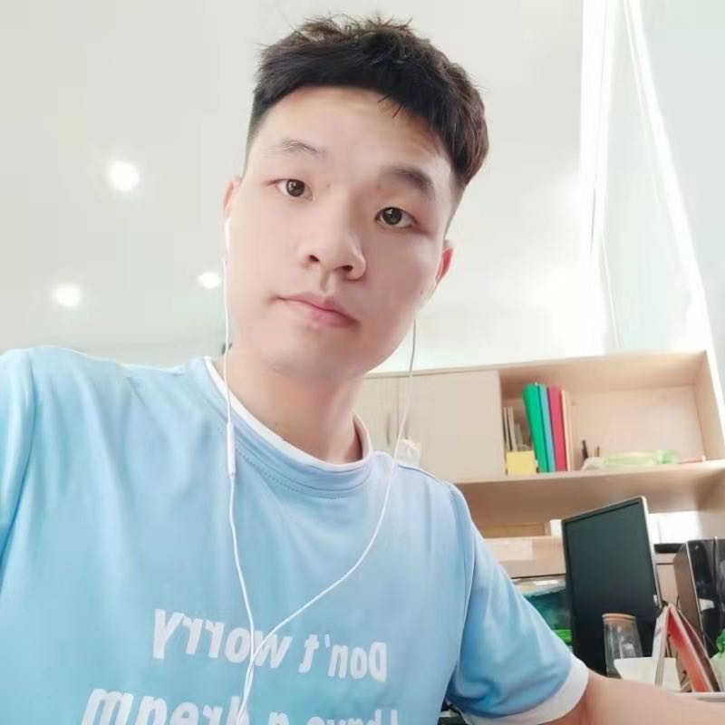
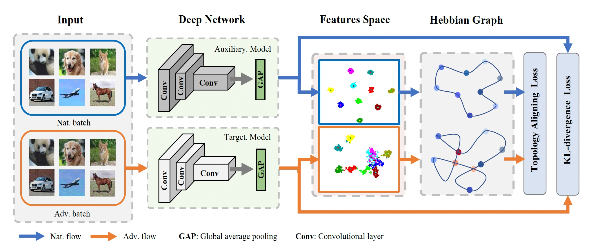
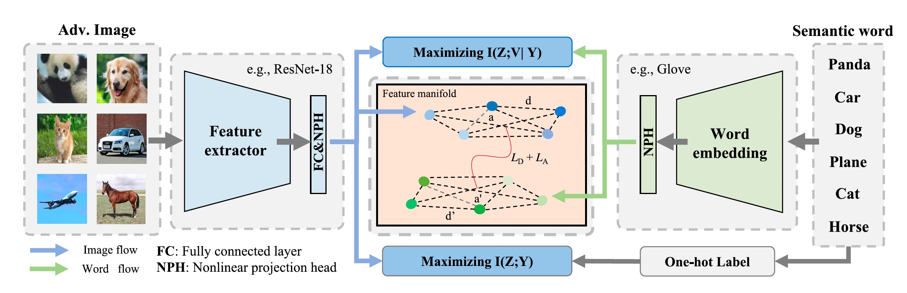
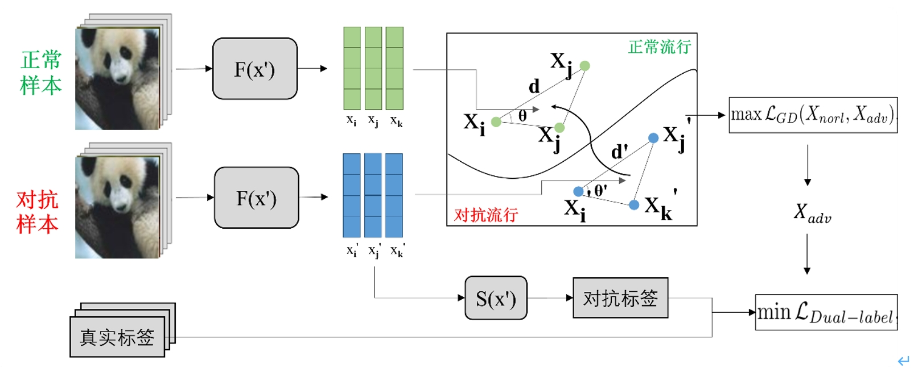
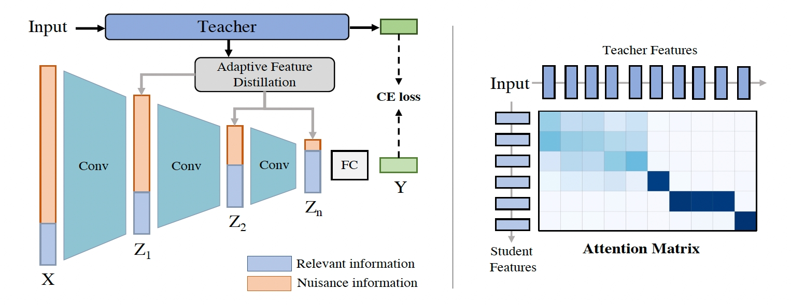
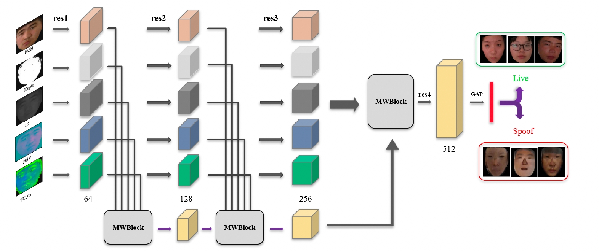
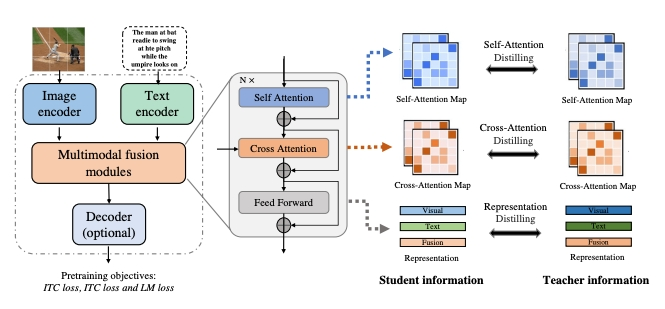
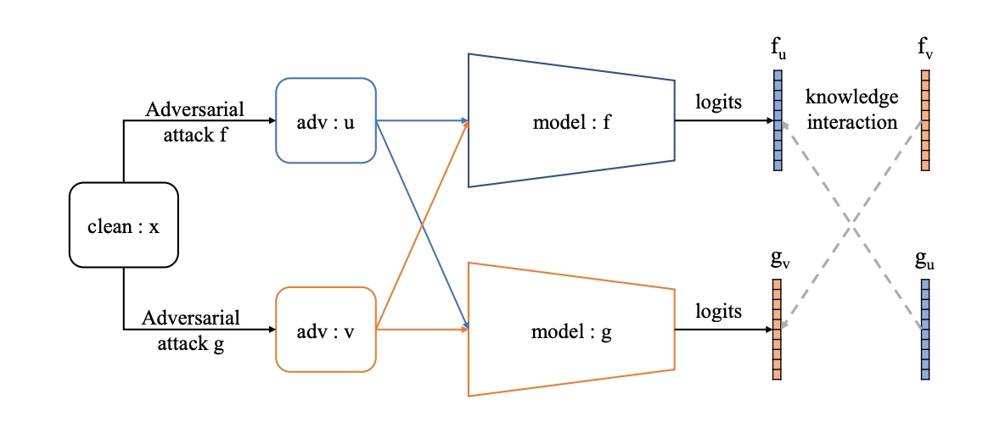

|  |
I am currently a fourth-year PhD student in Department of Artificial Intelligence, School of Informatics, Xiamen University, advised by Prof. Rongrong Ji.
Email: skykuang@stu.xmu.edu.cn [Github] [Scholar] |
|  | Huafeng Kuang, Hong Liu✉, Xianming Lin and Rongrong Ji
Defense Against Adversarial Attacks Using Topology Aligning Adversarial Training IEEE Transactions on Information Forensics and Security (TIFS), 2024 [paper] |
|  | Huafeng Kuang, Hong Liu , Yongjian Wu and Rongrong Ji✉
Semantically Consistent Visual Representation for Adversarial Robustness IEEE Transactions on Information Forensics and Security (TIFS), 2023 [paper] |
|  | 曹刘娟, 匡华峰✉, 刘弘, 王言, 张宝昌, 黄飞跃, 吴永坚, 纪荣嵘
双标签监督的几何约束对抗训训练 软件学报, 2022 |
|  | Huafeng Kuang, Hong Liu, Yongjian Wu, Shin'ichi Satoh and Rongrong Ji ✉
Improving Adversarial Robustness via Information Bottleneck Distillation 37th Conference on Neural Information Processing Systems (NeurIPS), 2023 [paper] |
|  | Huafeng Kuang, Rongrong Ji✉, Hong Liu, Shengchuan Zhang, Xiaoshuai Sun, Feiyue Huang and Baochang Zhang
Multi-modal multi-layer fusion network with average binary center loss for face anti-spoofing 27th ACM International Conference on Multimedia (ACM MM), 2019 [paper] |
|  | Huafeng Kuang, Jie Wu, Xiawu Zheng, Ming Li, Xuefeng Xiao, Rui Wang, Min Zheng, and Rongrong Ji✉
DLIP: Distilling Language-Image Pre-trainin [paper] |
|  | Xingbin Liu, Huafeng Kuang, Xianming Lin, Yongjian Wu, Rongrong JiRongrong Ji✉
CAT:Collaborative Adversarial Training [paper] |